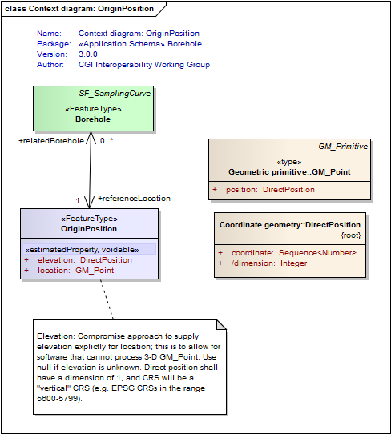
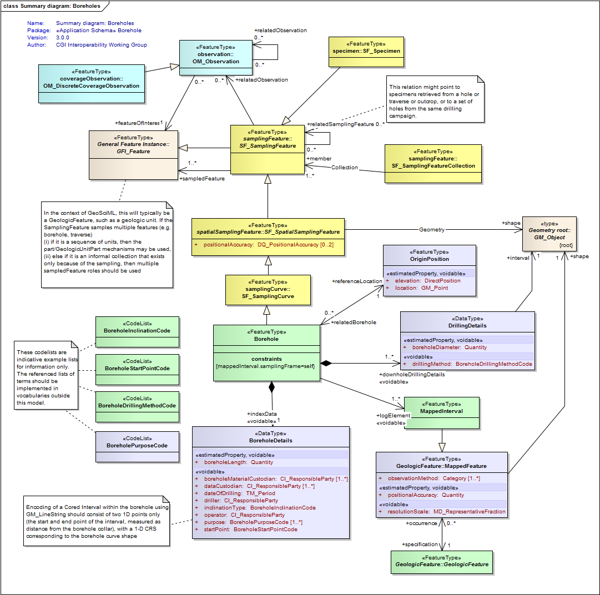
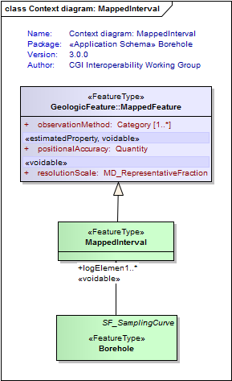
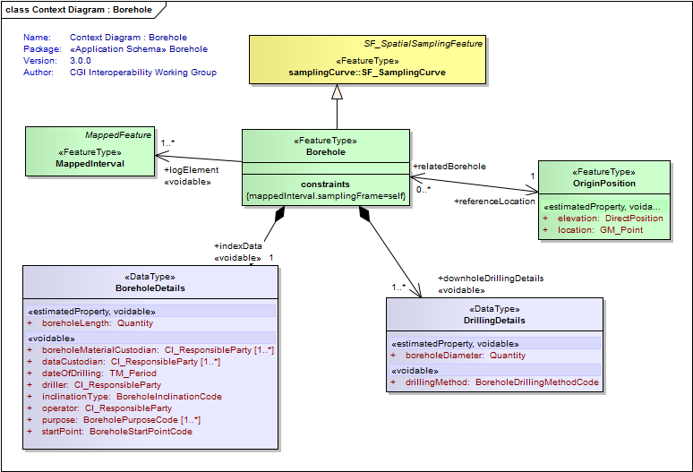
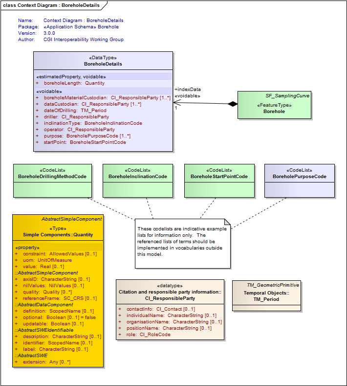

Package Borehole
The GeoSciML Borehole package contains model elements for representing Boreholes. This is primarily through re-use of standard components from the (external) Observations and Measurements package.
Class Summary |
|
| <<FeatureType>> Classes | |
Borehole
<<FeatureType>>
|
A borehole is the generalized term for any narrow shaft drilled in the ground, either vertically or horizontally. |
MappedInterval
<<FeatureType>>
|
A special kind of Mapped Feature whose shape is 1-D interval and uses the SRS of the containing borehole |
OriginPosition
<<FeatureType>>
|
A Borehole OriginPosition is a feature corresponding to the start point of a borehole log. This may, but not necessarily, correspond to the borehole collar location (eg, kelly bush). If a text descripiton of the location is available, it should be placed in the gml:description for that feature. If no GM_Point is available, an OGC nil value should be used. Implementers delivering 3-D origin locations should provide an elevation to improve interoperability. In situations where the origin position changes over the life of the borehole (eg, due to subsidence or destruction of the original collar), the origin position should be updated to the new location. |
| <<DataType>> Classes | |
BoreholeDetails
<<DataType>>
|
Borehole specific index (or metadata) information |
DrillingDetails
<<DataType>>
|
|
| <<CodeList>> Classes | |
BoreholeDrillingMethodCode
<<CodeList>>
|
This class is an indicative placeholder only for a vocabulary of terms describing the borehole drilling method. Users are encouraged to use a vocabulary of terms managed by the CGI vocabularies working group. For example: auger hand auger air core cable tool diamond core direct push hydraulic rotary rotary air blast percussion etc |
BoreholeInclinationCode
<<CodeList>>
|
This class is an indicative placeholder only for a vocabulary of terms describing the general orientation of a borehole. Users are encouraged to use a vocabulary of terms managed by the CGI vocabularies working group. For example: vertical horizontal inclined up inclined down |
BoreholePurposeCode
<<CodeList>>
|
Place holder for a vocabulary containing terms describing the purpose for which the borehole was drilled. eg, mineral exploration, water pumping, site evaluation, stratigraphic research, etc |
BoreholeStartPointCode
<<CodeList>>
|
This class is an indicative placeholder only for a vocabulary of terms describing the location of the start of a borehole. Users are encouraged to use a vocabulary of terms managed by the CGI vocabularies working group. Examples may include: natural ground surface - drilling started from a natural topographic surface open pit floor or wall - drilling started from the wall of an open pit or quarry underground - drilling started from an underground location, such as a driveway, chamber or open-stope from pre-existing hole - new drill hole spudded off the wall of an existing hole |
Tagged Values |
||
| Tag | Value | Notes |
| classMap | https://www.seegrid.csiro.au/subversion/GeoSciML/borehole/trunk/classmap/ClassMap_Borehole_GeoSciML_v3.xml | |
| gmlProfileSchema | #NOTES#Description: URL of the schema location of a GML profile (optional) | Description: URL of the schema location of a GML profile (optional) |
| owner | IUGS Commission for the Management and Application of Geoscience Information | |
| schemaLocation | http://schemas.geosciml.org/borehole/3.0/borehole.xsd | |
| targetNamespace | http://xmlns.geosciml.org/Borehole/3.0 | Default: FIXME Description: Target XML namespace of the application schema |
| version | 3.0.0 | Default: FIXME Description: Current version of the application schema |
| xmlns | gsmlbh | Default: FIXME Description: Namespace prefix to be used as short form of the target namespace |
| xsdDocument | borehole.xsd | Default: FIXME Description: Name of an XML Schema document to create representing the content of this package |
| xsdEncodingRule | iso19136_2007_INSPIRE_Extensions | Values: iso19136_2007 | iso19139_2007 | iso19136_2007_INSPIRE_Extensions Default: iso19136_2007 Description: XML Schema encoding rule to apply |
UML Diagram: Context diagram: OriginPosition

UML Diagram: Summary diagram: Boreholes

UML Diagram: Context diagram: MappedInterval

UML Diagram: Context Diagram : Borehole

UML Diagram: Context Diagram : BoreholeDetails
